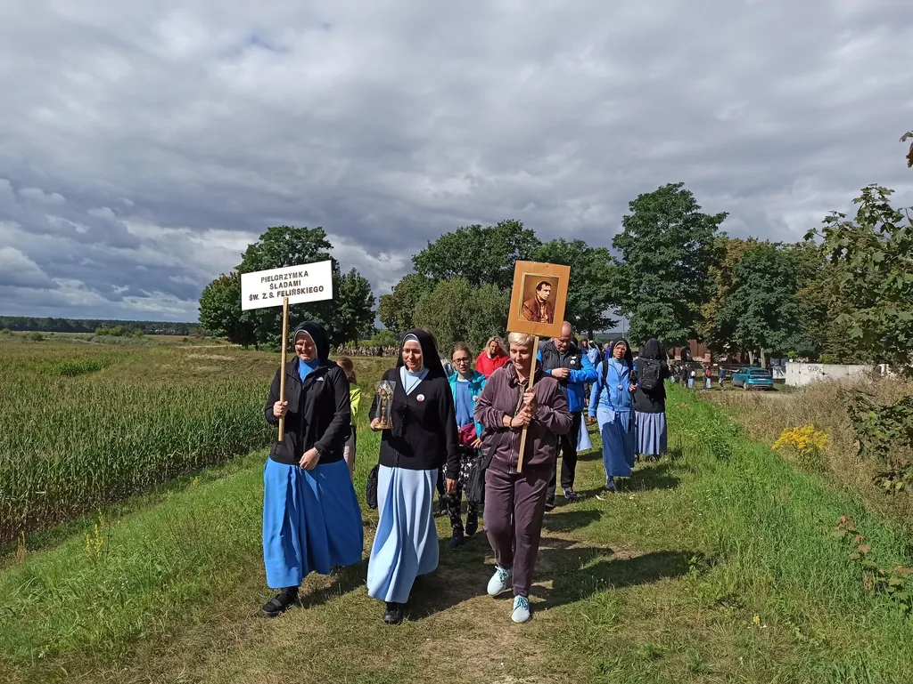
Siostry Franciszkanki Rodziny Maryi w Warszawie
Prowincja Matki Bożej Niepokalanej, ul. Hoża 53. Żyjemy duchem rodzinnym Nazaretu, w prostocie i pracy, służąc dzieciom, młodzieży, chorym i osobom starszym.
Msze Święte
- Poniedziałek - sobota6.10
- Niedziela7.3010.00
- II niedziela miesiąca10.00Msza Święta za dzieci z Okna Życia, za ich rodziców biologicznych i adopcyjnych
ul. Hoża 53, 00-681 Warszawa
Nabożeństwa i adoracja
- Do św. Zygmunta Szczęsnego Felińskiegokażdego 17. dnia miesiąca (oprócz lipca i sierpnia)
- Do Niepokalanego Serca Maryipierwsza sobota miesiąca, godz. 17.15
- Adoracja Najświętszego Sakramentuw każdy czwartek od 7.00 do 17.00 (oprócz lipca i sierpnia)
Zgromadzenie
Kierując się duchem Ewangelii, w szczególny sposób praktykujemy miłość Boga i bliźniego na wzór Chrystusa i Jego Matki.
- Duch rodzinnyna wzór cnót Świętej Rodziny z Nazaretu
- Pokora i prostota
- Duch ubóstwa
- Duch pracowitości
- Duch apostolstwa
- Duch franciszkańskina wzór św. Ojca Franciszka
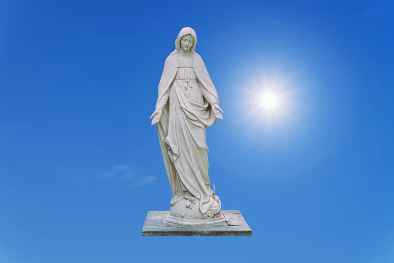
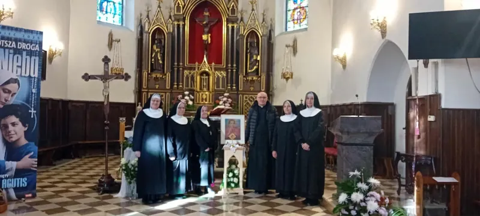
Apostolstwo
„Realizując cel Zgromadzenia, siostry w duchu chrześcijańskim wychowują i nauczają dzieci i młodzież, pielęgnują chorych i osoby w podeszłym wieku oraz niosą pomoc duchowieństwu.”
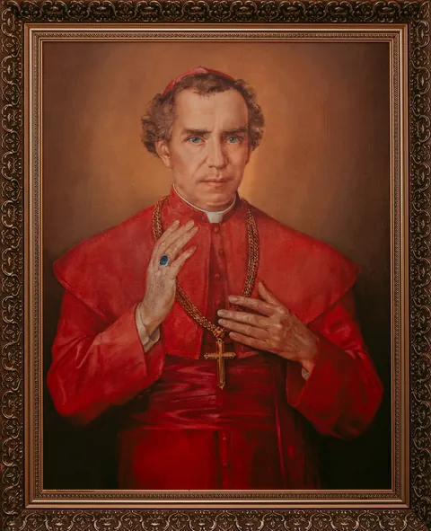
Św. Zygmunt Szczęsny Feliński
Założyciel Zgromadzenia, arcybiskup warszawski, przez blisko dwadzieścia lat zesłaniec w Jarosławiu nad Wołgą.
„Mój punkt widzenia to wiara. Chciałbym, aby wszystko, co mnie zachwyca, miało w niej swój początek…”
- 1822urodzony 1 listopada w Wojutynie koło Łucka
- 1857ojciec duchowny Akademii w Petersburgu i kapelan zakładu Rodziny Maryi
- 1862arcybiskup warszawski, po 16 miesiącach zesłany przez władze carskie
- 2002beatyfikowany 18 sierpnia na krakowskich Błoniach przez św. Jana Pawła II
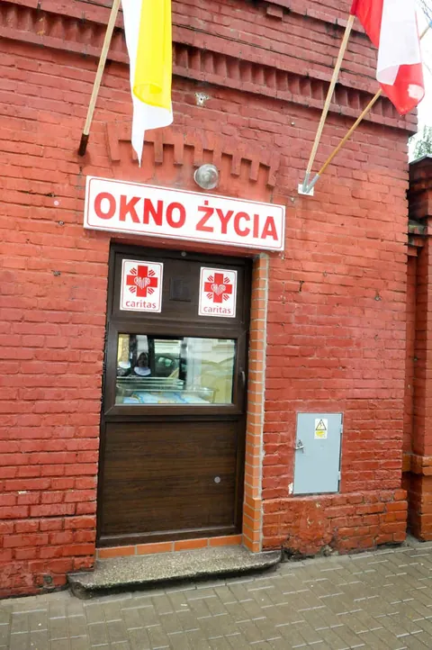
Okno życia
Okno życia przy ul. Hożej 53 otwarto 6 grudnia 2008 roku. To bezpieczne miejsce, w którym matka, która z różnych powodów nie może wychować dziecka, może je anonimowo pozostawić. Siostry czuwają przy nim 24 godziny na dobę.
Dziecko otrzymuje opiekę w pierwszych chwilach, trafia do szpitala, potem do pogotowia rodzinnego, a równocześnie rozpoczyna się procedura adopcyjna. Do 2026 roku ocalenie znalazło tu 21 dzieci.
„Kto by przyjął jedno dzieciątko takowe w Imię Moje, Mnie przyjmuje.”
W każdą II niedzielę miesiąca o 10.00 modlimy się za dzieci z Okna Życia oraz ich rodziców biologicznych i adopcyjnych.
Droga powołania
Każda siostra przechodzi kolejne etapy formacji, od pierwszego zamieszkania we wspólnocie po profesję wieczystą. Jeśli myślisz o życiu zakonnym, zadzwoń albo napisz.
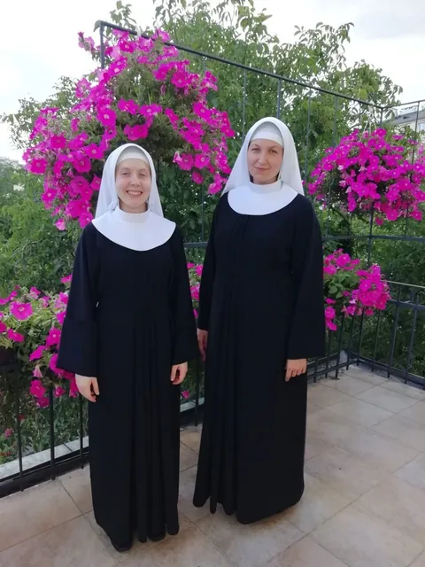
Aspirat
przygotowanieKandydatka mieszka we wspólnocie, przygląda się codziennemu życiu sióstr i otrzymuje czarną sukienkę z białym kołnierzykiem.
Postulat
co najmniej 6 miesięcyRozpoczyna się przyjęciem białego welonika. Modlitwa, Słowo Boże i poznawanie ducha Zgromadzenia.
Nowicjat
2 lataCzarny habit i biały welon. Czas szczególnej więzi z Chrystusem pod opieką Siostry Mistrzyni.
Juniorat
5 latPierwsza profesja, krzyż i czarny welon. Śluby ponawiane co roku, nauka i praca w wyznaczonych obowiązkach.
Profesja wieczysta
na całe życieCałkowite oddanie się Bogu i Zgromadzeniu, rekolekcje w ciszy i comiesięczne dni skupienia.
Dla dziewcząt i młodych kobiet
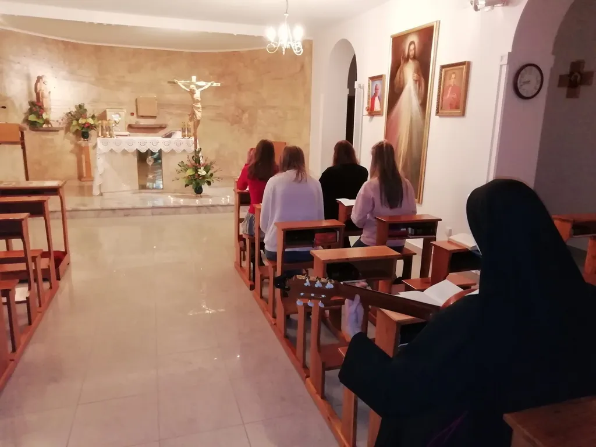
Dni skupienia
Weekendowe spotkania dla dziewcząt 15+, które chcą umocnić i pogłębić swoją wiarę oraz nabrać odwagi, by ją wyznawać wśród rówieśników.
Dni pustyni
Indywidualny czas ciszy i modlitwy, żeby choć na chwilę odejść na bok i wsłuchać się w głos Boga w swoim sercu.
Rekolekcje wakacyjne
Pięć dni na początku wakacji w jednym z domów Zgromadzenia: modlitwa, sakramenty, wspólnota i przyjaźnie na dalsze życie.
Aktualności
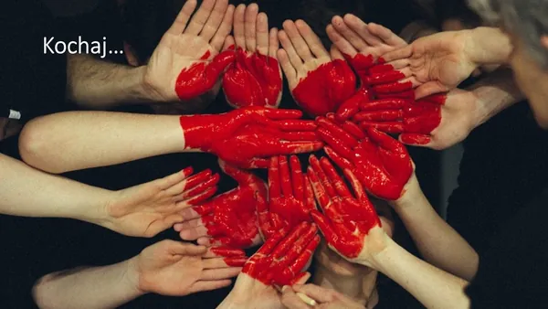
XXX Niedziela Zwykła
Fragment Ewangelii z dnia proponowany do medytacji.
Dzień skupienia dla kobiet myślących o życiu zakonnym
Zaproszenie na dzień modlitwy i skupienia przy ul. Hożej 53.
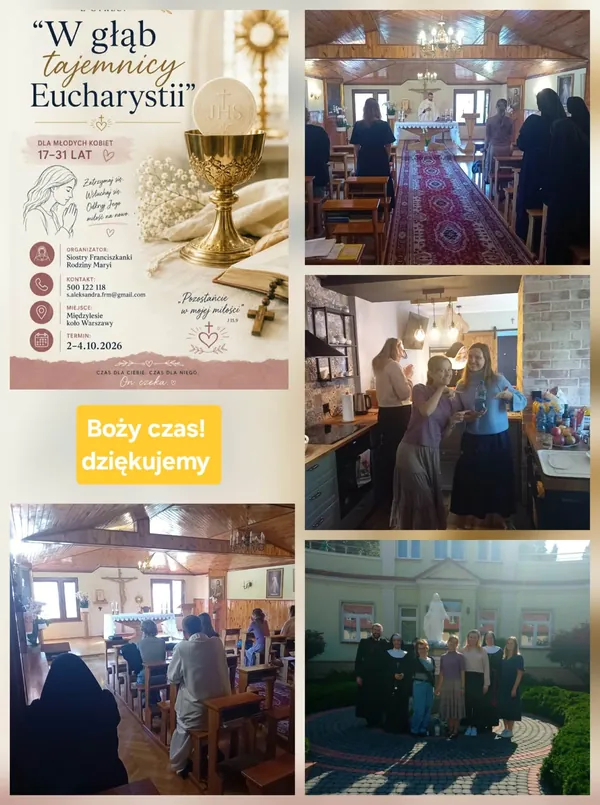
Relacja z dni skupienia
Dni skupienia dla dziewcząt 17+ w domu sióstr w Międzylesiu Ulanówku.
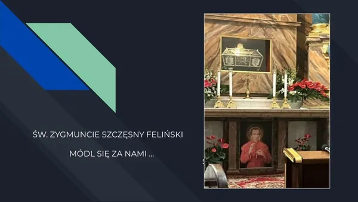
Uroczystość św. Zygmunta Szczęsnego Felińskiego
Msza Święta dziękczynna w archikatedrze warszawskiej.
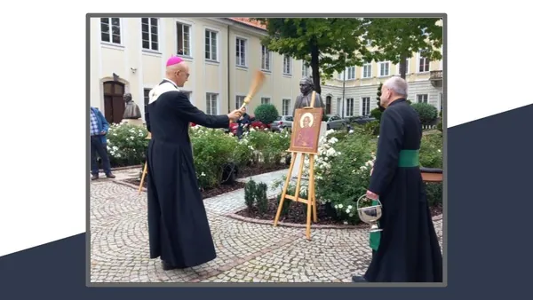
Odsłonięcie popiersia św. Zygmunta w Warszawie
W 131. rocznicę śmierci Założyciela, na dziedzińcu Domu Arcybiskupów Warszawskich.
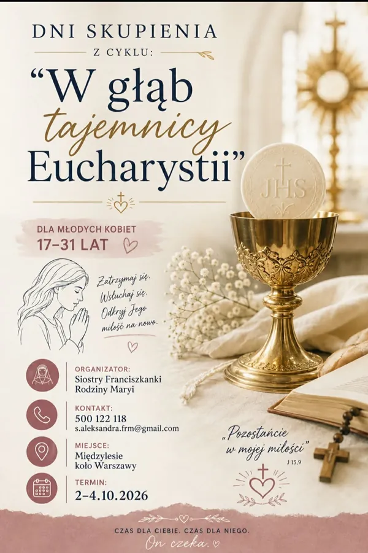
Dni skupienia - zapraszamy
Dla młodych kobiet w wieku 17-31 lat, 2-4 października.
Kontakt
- Adres
- Prowincja Matki Bożej Niepokalanej
ul. Hoża 53, 00-681 Warszawa - Telefon
- (22) 629 67 87
- siostry-frm@warszawa.opoka.org.pl
- Dni skupienia i rekolekcje
- 500 122 118